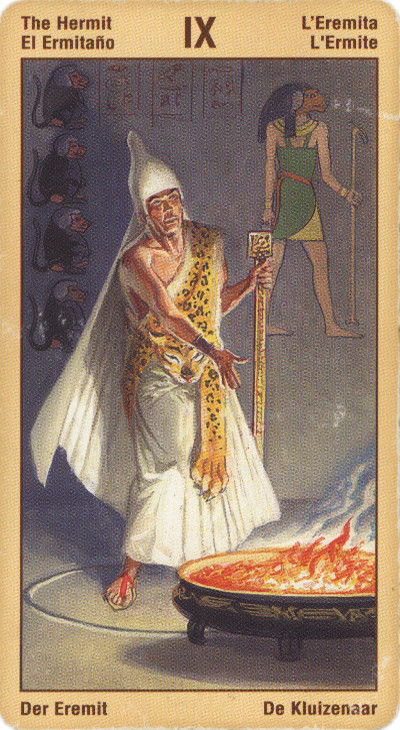

Отшельник
Смысл карты: пора оставить мелочные заботы и ставшие привычными развлечения: они мешают задуматься о душе.
Каждому человеку требуется период уединения (“отшельничество”), чтобы разобраться наконец в себе самом.
Значение: Для эзотериков и вообще людей, заботящихся о своем духовном росте, Отшельник может означать ощущение одиночества оттого, что его бывшие товарищи и близкие перестали понимать его: он ушел вперед, а они остались там же, где были. Поэтому общаться он может теперь лишь с такими же Отшельниками, но их мало, а поблизости может не быть вообще. Лучше иди вперед, говорит эта карта, покоряй следующие вершины, и ты найдешь новых друзей.
Для людей обычных, например, девушки, брошенной парнем (“Вернется ли он?” Или: “Скоро ли я выйду замуж?”), означает просто одиночество, по крайней мере в ближайшее время, то есть ответ на такие бытовые вопросы будет отрицательным. Хотя та же карта дает ей и совет: займись пока лучше своим духовным ростом, используй отпущенное тебе одиночество для пользы дела.
Эта карта может указывать на учителя, наставника или мудрого человека, но она может относиться и к внутреннему поводырю.
Мы должны черпать энергию и мудрость из опыта который приобретаем благодаря пяти органам чувств но мы также должны пить и из глубокого источника тишины и покоя, который расположен внутри нас.
Не поддавайтесь соблазну принимать важные решения, потому что сейчас пришло время отвлечься от суеты и волнений повседневной жизни.
Вместо этого дайте им возможность позаботиться о себе самим, пока вы следуете за своей интуицией для то чтобы проникнуть глубже.
Отшельник - это карта отрешённости от мира, путь к себе.
Отшельник ищетет Бога внутри самого себя, он ищет ту невидимую основу своего существования, в которой кроются истоки жизни и будущего. Познание ведет к действию, и до поры до времени лицо отшельника скрыто: он молчит до тех пор, пока его аура не очистилась и не засияла новым светом. Отшельнику предстоит сначала осветить красотой порядка собственную душу, прежде чем она станет светочем для других.
Это - не Колесничий, который ищет себя во внешнем мире, совершая поступки, а уединенное исследование колодца своей души.
В прямом положении карта символизирует уравновешенность, осторожность и осмотрительность. Иногда указывает на осторожность и оторванность от жизни. Но обстоятельства могут сложиться и так, что временное одиночество сможет привести к лучшей жизни.
В перевернутом положении, наоборот, Отшельник говорит, что девушка одна не останется, а возможно, и замуж выйдет в самом скором времени. Для эзотериков же он означает, что, увы, вершина еще не достигнута (возможно, путь был ошибочен), что творческого уединения нет и пока не предвидится.
Для бизнесмена Отшельник что так, что эдак неблагоприятен. Единственный совет – немедленно бросить тот бизнес, которым он занимается в данный момент, и переключиться на что-то другое.
В отрицательном значении: Обман, ложь, мошенник, коррупция, ложные пути решения проблемы, ложные идеалы, друзья.
Появление Аркана «Отшельник» недвусмысленно намекает на то, что вам следует проявлять большую осторожность в своих действиях - иначе ситуация грозит обернуться для вас боком.
Внимательнейшим образом присмотритесь также к сопутствующим Младшим Арканам. Не исключено, что они укажут, чего конкретно вы должны опасаться в дальнейшем.